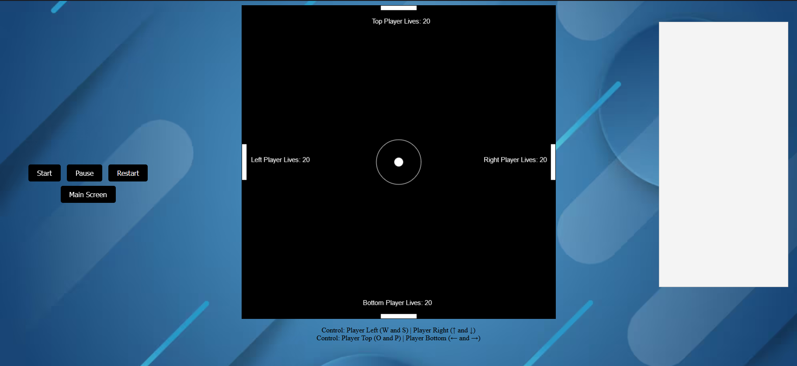
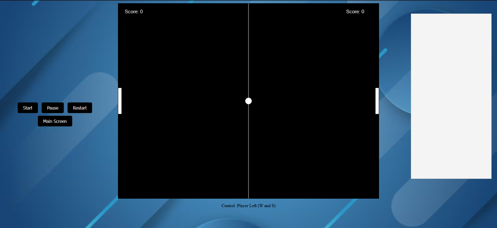

2 Player Versus
This version has two players go head to head to see which one can be the first
to score 20 points. The left player uses W to move their paddle up and S to move their
paddle down. The Right player uses the up arrow to move their paddle up and the down
arrow to move their paddle down. The first player to reach a score of 20 is the winner.
4 Player Versus
This version has four players go head to head to see which one can survive the longest. Each player
has 20 lives once the player's life count reaches 0 they are eliminated and their paddle extends to
form a wall. The last player with a life is declared the winner.
The left player uses W to move their paddle up and S to move their
paddle down. The Right player uses the up arrow to move their paddle up and the down
arrow to move their paddle down. The Top player uses A to move their paddle left, and D to move their
paddle right. The bottom player uses the left arrow to move their paddle left and the right arrow
to move their paddle to the right.

Player Vs AI
This version you play against the AI to see if you can reach 20 points before the AI does. To make the
game a bit more fair when you hit the ball with your paddle the ball's speed increases slightly, and
when the AI hits the ball with their paddle the speed of their paddle gets reduced slightly. You can press
W to move the paddle up, and S to move the paddle down.
